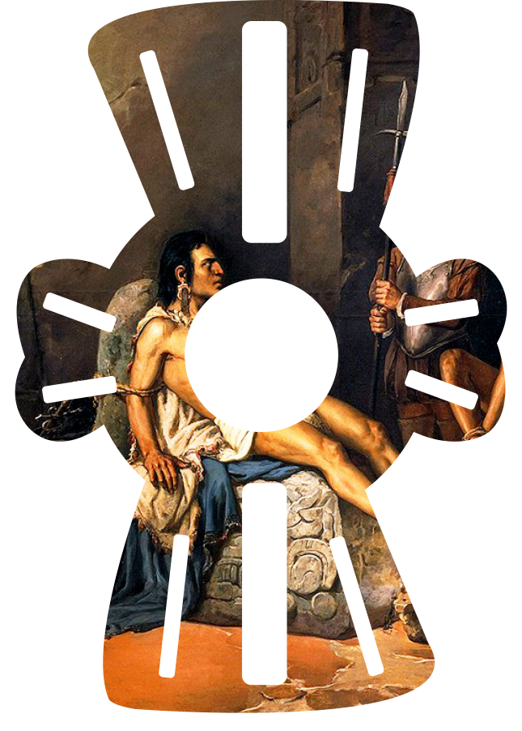
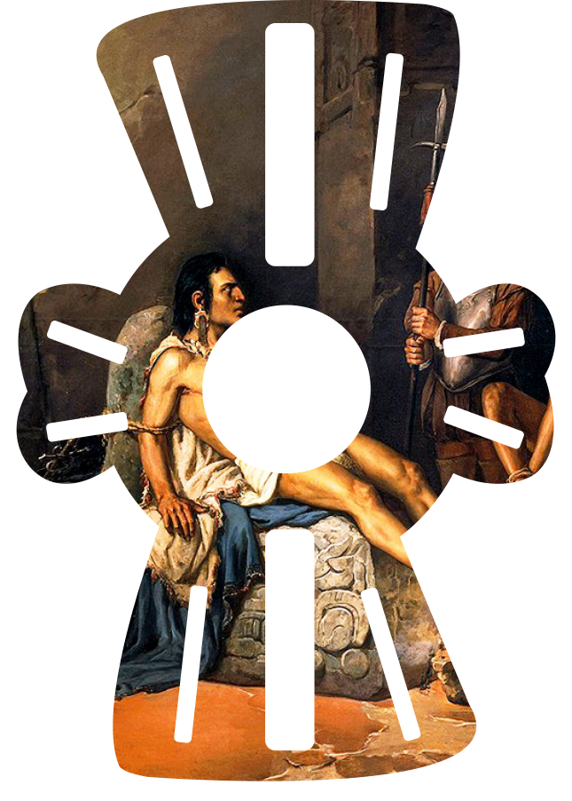

Historia General de las cosas de Nueva España
Fray Bernardino de Sahagún

Biblioteca Medicea Laurenciana, Florencia, Italia.

Se realizó la obra entre 1558 y 1580.

En 1829 Carlos María de Bustamante realizó en México la edición de la obra, se imprimió en la imprenta de A. Valdés.
En 1880 Rémi Siméon publicó en París la obra en francés con el nombre Historie générale des choses de la Nouvelle Espane
Entre 1905 y 1908 se publicó la obra en México por Francisco del Paso y Troncoso con el nombre de Historia de las cosas de Nueva España.
En 1938 la obra fue publicada en la editorial Pedro Robredo bajo el nombre de Historia general de las cosas de Nueva España, con una introducción de Wigberto Jiménez Moreno.
En 1954 Arthur J. O. Anderson y Charles E. Dibble publicaron la obra en la editorial University of Utah Press con el nombre History of the Things of New Spain.
En 1964 Ángel María Garibay realizó una edición de la obra, misma que fue publicada por Porrúa con el nombre Historia general de las cosas de Nueva España.
En 1982 se publicó la obra con una introducción, glosario y notas de Alfredo López Austin y Josefina García Quintana con el nombre de Historia General de las Cosas de la Nueva España. Primera versión íntegra del texto castellano del manuscrito conocido como Códice Florentino en la editorial del Fondo de Cultura Banamex.
Historia e las Indias de Nueva España e Islas de Tierra Firme
Fray Diego Durán
Biblioteca Nacional de España.
1587
Entre 1867 y 1888, José Fernando Ramírez realizó la primera publicación de esta obra dividida por partes, y acompañada de un atlas de estampas con notas e ilustraciones con el nombre Historia de las Indias de Nueva España e islas de Tierra Firme.
En 1951 se hizo una reimpresión de la obra publicada en 1867 y 1888 por José Fernando Ramírez.
En 1967 Ángel María Garibay realizó una edición de la obra en editorial Porrúa con el nombre Historia de las Indias de Nueva España e islas de Tierra Firme.
En 1980 José Rubén Romero Galván y Rosa Camelo prepararon una nueva edición con el título Historia de las Indias de Nueva España e islas de Tierra Firme.
Monarquía Indiana. De los veinte y un libros rituales y monarquía indiana,
con el origen y guerras de los indios occidentales, de sus poblazones, descubrimiento, conquista, conversión y otras cosas maravillosas de la mesma tierra
Fray Juan de Torquemada
El manuscrito original se encuentra perdido. La obra se publicó completa en 1616.
Se escribió entre 1590 y 1613.
Se publicó en Sevilla en 1616 por el impresor Matías Clavijo.
En 1723 se publicó en Madrid a cargo de Nicolás Rodríguez Franco.
Entre 1943 y 1944 se realizó en México una nueva edición a cargo de Salvador Chávez-Hayhoe.
En 1969 se publicó una edición facsimilar por la editorial Porrúa.
Entre 1975 y 1944 Miguel León-Portilla realizó una edición de la obra publicada por la Universidad Nacional Autónoma de México.
Brevísima relación de la destrucción de las Indias
Fray Bartolomé de las Casas
Archivo Histórico de la Provincia de los Dominicos de Aragón en Valencia.
1539-1550
Se publicó por primera vez en 1552 en Sevilla en la imprenta de Sebastián Trujillo.
En 1985 la editorial SARPE sacó a la luz una edición con el nombre Brevísima relación de la destrucción de las Indias.
En 2010 se realizó una edición de la obra por Alianza Editorial cuya edición estuvo a cargo de Trinidad Barrera bajo el nombre de Brevísima relación de la destrucción de las Indias.
En 2015 se publicó la obra con el nombre Brevísima relación de la destrucción de las Indias en la editorial del Consejo Nacional para la Cultura y las Artes, la edición estuvo a cargo de José Miguel Martínez Torrejón.

 
